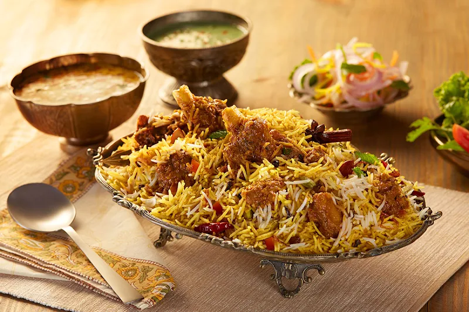

Biryani
Pakistani Biryani stands as a crown jewel of Pakistani cuisine, celebrated for its bold flavors and aromatic spices that weave a tapestry of culinary delight. This delectable dish typically features fragrant basmati rice layered with tender chunks of meat—often chicken, lamb, or beef—that have been marinated in a tantalizing blend of spices and yogurt. What sets Pakistani Biryani apart is its unique regional variations, with each province adding its own twist to the recipe, whether through the use of local spices, cooking techniques, or accompaniments.
One of the most beloved renditions is Karachi Biryani, hailing from the bustling metropolis of Karachi. This version boasts succulent meat cooked to perfection, nestled amidst layers of aromatic rice infused with saffron, mint, and caramelized onions. Served alongside a refreshing raita (yogurt sauce) and spicy achaar (pickle), Pakistani Biryani transcends mere sustenance to become a culinary journey through the rich and diverse flavors of the subcontinent, embodying the warmth and hospitality for which Pakistan is renowned.